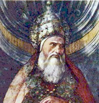

St. Pius
Date of birth unknown; pope from about 140 to about 154. According to the earliest list of the popes, given by Irenaeus (Against Heresies II.31; cf. Eusebius, Church History V.6), Pius was the ninth successor of St. Peter. The dates given in the Liberian Catalogue for his pontificate (146-61) rest on a false calculation of earlier chroniclers, and cannot be accepted. The only chronological datum we possess is supplied by the year of St. Polycarp of Smyrna's death, which may be referred with great certainty to 155-6. On his visit to Rome in the year before his death Polycarp found Anicetus, the successor of Pius, bishop there; consequently, the death of Pius must have occurred about 154. The "Liber Pontificalis" (ed. Duchesne, I, 132) says the father of Pius was Rufinus, and makes him a native of Aquileia; this is, however, probably a conjecture of the author, who had heard of Rufinus of Aquileia (end of fourth century). From a notice in the "Liberian Catalogue" (in Duchesne, "Liber Pontificalis", I, 5), which is confirmed by the Muratorian Fragment (ed. Preuschen, "Analecta", I, Tübingen, 1910), we learn that a brother of this pope, Hermas by name, published "The Shepherd" (see HERMAS). If the information which the author gives concerning his personal conditions and station (first a slave, then a freedman) were historical, we should know more about the origin of the pope, his brother. It is very possible that the story which Hermas relates of himself is a fiction.
During the pontificate of Pius the Roman Church was visited by various heretics, who sought to propagate their false doctrine among the faithful of the capital. The Gnostic Valentinus, who had made his appearance under Pope Hyginus, continued to sow his heresy, apparently not without success. The Gnostic Cerdon was also active in Rome at this period, during which Marcion arrived in the capital (see MARCIONITES). Excluded from communion by Pius, the latter founded his heretical body (Irenaeus, Against Heresies III.3). But Catholic teachers also visited the Roman Church, the most important being St. Justin, who expounded the Christian teachings during the pontificate of Pius and that of his successor. A great activity thus marks the Christian community in Rome, which stands clearly conspicuous as the centre of the Church. The "Liber Pontificalis" (ed. cit.) speaks of a decision of this pope to the effect that Jewish converts to Christianity should be admitted and baptized. What this means we do not know; doubtless the author of the "Liber Pontificalis", here as frequently, refers to the pope a decree valid in the Church of his own time. A later legend refers the foundation of the two churches, the titulus Pudentis (ecclesia Pudentiana) and the titulus Praxedis, to the time of this pope, who is also supposed to have built a baptistry near the former and to have exercised episcopal functions there (Acta SS., IV May, 299 sqq.; cf. de Rossi, "Musaici delle chiese di Roma: S. Pudenziana, S. Prassede"). The story, however, can lay no claim to historical credibility. These two churches came into existence in the fourth century, although it is not impossible that they replaced Christian houses, in which the faithful of Rome assembled for Divine service before the time of Constantine; the legend, however, should not be alleged as proof of this fact. In many later writings (e.g. the "Liber Pontificalis") the "Pastor" or "Shepherd" in the work of Hermas is erroneously accepted as the name of the author, and, since a Roman priest Pastor is assigned an important role in the foundation of these churches, it is quite possible that the writer of the legend was similarly misled, and consequently interwove Pope Pius into his legendary narrative (see PRAXEDES AND PUDENTIANA). Two letters written to Bishop Justus of Vienne (P.L., V, 1125 sq.; Jaffé, "Regesta", I, 2nd ed., pp. 7 sq.), ascribed to Pius, are not authentic. The feast of St. Pius I is celebrated on 11 July.
Liber Pontif., I, ed. DUCHESNE, 132 sq.; LANGEN, Gesch. der rom. Kirche, I (Bonn, 1881), 111 sq.; DUCHESNE, Hist. ancienne de l'église, I (Paris, 1906), 236 sqq. On chronological questions cf. LIGHTFOOT, The Apostolic Fathers, I, i (2nd ed., London, 1890), 201 sqq.; HARNACK, Gesch. der altchristl. Lit., II (Leipzig, 1897), i, 133 sqq.; MEYRICK, Lives of the Early Popes (London, 1880).
Kirsch, J.P. (1911). Pope St. Pius I. In The Catholic Encyclopedia. New York: Robert Appleton Company. Retrieved April 26, 2010 from New Advent: http://www.newadvent.org/cathen/12126b.htm